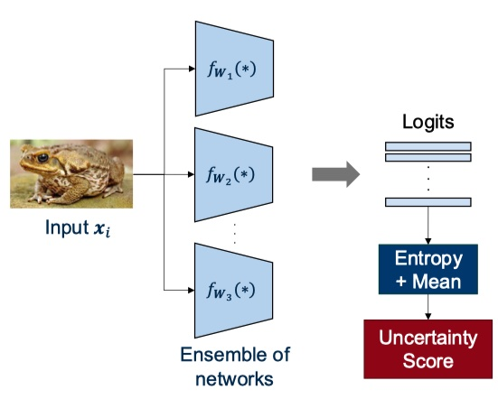
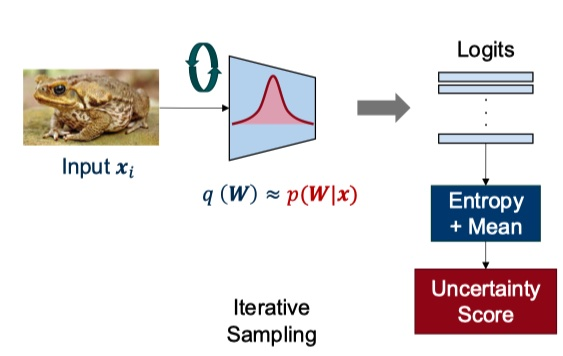
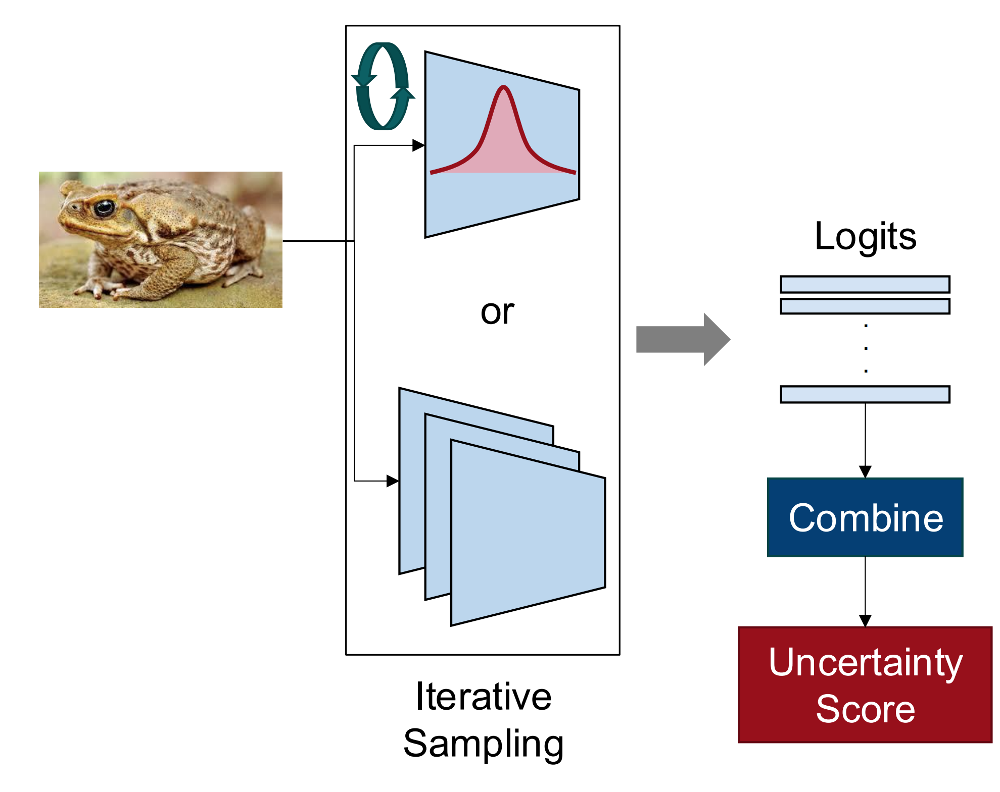
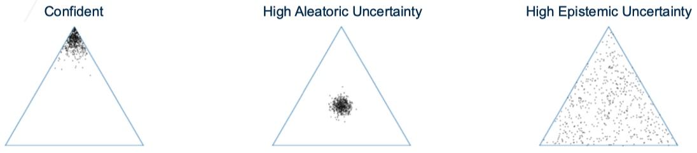
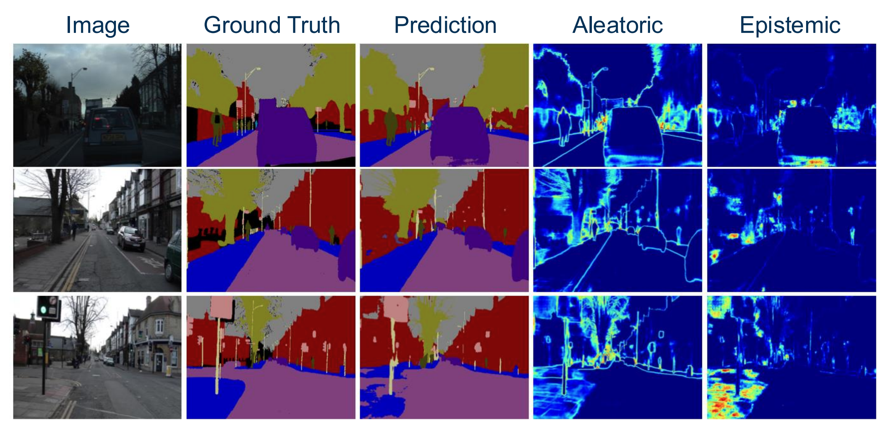
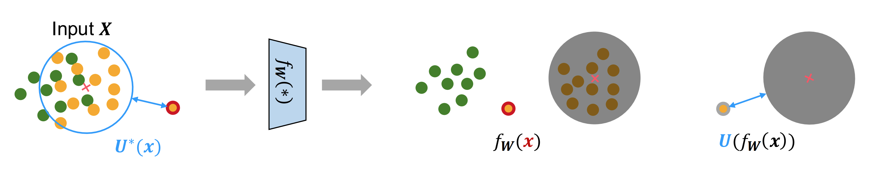
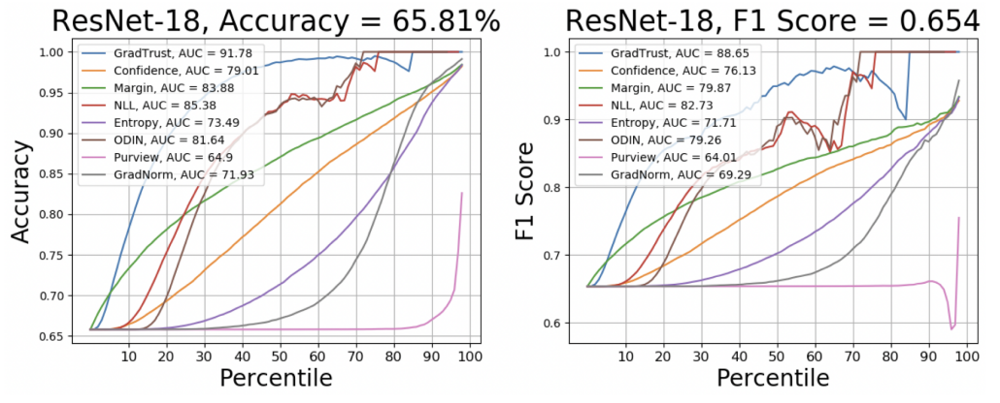

1. Lecture Objectives
In this lecture, we study uncertainty quantification in neural networks, which is a fundamental topic for deploying machine learning systems in real-world environments. While traditional machine learning focuses primarily on prediction accuracy, modern applications increasingly require models to also estimate how confident they are in their predictions . This is especially important in safety-critical systems such as healthcare, autonomous driving, and scientific decision making.
We begin by motivating why uncertainty matters from both human cognition and machine learning perspectives. We then introduce the two fundamental categories of uncertainty: aleatoric uncertainty, which arises from inherent noise in the data, and epistemic uncertainty, which arises from limitations in model knowledge . After establishing these foundations, we study practical methods for estimating uncertainty, including iterative methods such as deep ensembles and Monte Carlo dropout, as well as single-pass uncertainty estimation techniques designed for efficient deployment. Finally, we discuss performance metrics used to evaluate uncertainty estimation methods and how these metrics vary depending on the application.
By the end of this lecture, students should understand:
Why uncertainty estimation is necessary for trustworthy machine learning.
The conceptual difference between aleatoric and epistemic uncertainty.
Practical approaches for estimating uncertainty in deep neural networks.
How uncertainty estimation is evaluated in practice.
2. Introduction and Motivation
Uncertainty is an unavoidable aspect of both human reasoning and machine learning systems. In many real-world situations, decisions must be made with incomplete information, noisy observations, or imperfect models. Understanding how to measure and reason about uncertainty is therefore essential for building reliable intelligent systems.
From a machine learning perspective, uncertainty quantification provides a mechanism for determining when a model should trust its predictions and when it should defer to human intervention or additional data collection. Rather than simply producing predictions, modern machine learning systems increasingly must answer an additional question:
How certain is the model about this prediction?
2.1 Human Uncertainty
Uncertainty is not unique to machine learning; it is also a fundamental aspect of human perception and decision-making. Even when two people observe the same data, they may arrive at different conclusions because perception is influenced by context, prior assumptions, and ambiguity in the observed signal. These sources of uncertainty closely mirror the causes of uncertainty in machine learning systems that we will later formalize in Section 3.
A well-known example is the viral “Blue or Gold Dress” image shown in Fig. 1. Some viewers perceive the dress as blue and black, while others see it as white and gold. This example illustrates that uncertainty is not merely a computational issue. Instead, it is deeply connected to how humans interpret sensory information. The underlying pixels in the image do not change, yet people can still produce conflicting interpretations. This makes the example a useful reminder that ambiguity can exist even before we begin designing machine learning algorithms. Later in Section 4, we will see that this type of ambiguity closely resembles what is known as aleatoric uncertainty, where the uncertainty arises from the data itself rather than the observer.
Another example arises in expert decision-making tasks such as reading chest X-rays, as illustrated in Fig. 2. A trained radiologist may be able to distinguish pneumonia from a healthy chest with relatively high confidence, whereas a non-expert may be much less certain. In this case, the uncertainty comes partly from ambiguity in the image and partly from differences in experience and domain knowledge. This example connects to what we will later define in Section 4 as epistemic uncertainty, where uncertainty results from incomplete knowledge rather than inherent data noise.
Together, these examples highlight an important principle that carries over directly to machine learning: uncertainty can arise either because the data itself is ambiguous or because the observer lacks sufficient knowledge to interpret it confidently. These two sources of uncertainty form the foundation for the formal uncertainty taxonomy introduced later in this lecture.
2.2 Uncertainty Quantification in Neural Networks
Uncertainty also plays a critical role in machine learning systems. Neural networks typically produce predictions such as classification labels, regression values, or segmentation maps. However, these outputs alone do not communicate how reliable the predictions are.
For example, consider an image segmentation model. The model may assign class labels to each pixel, but without uncertainty estimation we cannot determine which regions of the image were confidently predicted and which were ambiguous. To address this limitation, uncertainty heatmaps can be generated alongside predictions. These maps highlight regions where the model is less confident, allowing practitioners to better interpret model behavior.
Uncertainty quantification is particularly important in safety-critical applications. A well-known example is a fatal autonomous driving accident in which a vehicle failed to detect a truck crossing its path. One contributing factor was that the system did not properly account for its uncertainty regarding the object detection task. If the model had recognized its own uncertainty, it might have triggered additional safety mechanisms.
This motivates a central idea in modern machine learning:
Reliable systems must not only make predictions, but also recognize what they do not know .
3. Factors that cause uncertainty
3.1 Uncertainty Quantification Across Learning Tasks
Uncertainty quantification (UQ) plays a central role across the three primary machine learning tasks introduced earlier in this course: classification, regression, and clustering. While the underlying concept of uncertainty remains the same, its interpretation and measurement differ depending on the task.
1. Classification: In classification, the model outputs a probability distribution over discrete classes: \[p(y \mid x) = [p_1, p_2, \dots, p_K]\] Uncertainty reflects how concentrated or dispersed this distribution is. A highly confident prediction assigns most probability mass to a single class, while an uncertain prediction spreads probability across multiple classes.
2. Regression: In regression, the model predicts a continuous output. Uncertainty is typically modeled as a predictive distribution: \[y \sim \mathcal{N}(\mu(x), \sigma^2(x))\] where \(\mu(x)\) is the predicted mean and \(\sigma^2(x)\) captures uncertainty. High variance indicates low confidence in the prediction.
3. Clustering: In clustering, uncertainty arises in assigning data points to clusters. Instead of hard assignments, probabilistic clustering methods (e.g., Gaussian Mixture Models) assign soft cluster memberships: \[p(z = k \mid x)\] Uncertainty reflects ambiguity in cluster membership, particularly near cluster boundaries.
3.2 Metrics for Quantifying Uncertainty
To evaluate uncertainty estimates, several quantitative metrics are commonly used across tasks:
Negative Log-Likelihood (NLL): Measures how well the predicted probability distribution explains the observed data: \[\mathcal{L}_{NLL} = -\log p(y \mid x)\] Lower NLL indicates better calibrated and more confident predictions.
Brier Score: Measures the squared difference between predicted probabilities and true labels: \[\text{Brier} = \sum_{k=1}^{K} (p_k - y_k)^2\] It captures both accuracy and calibration.
Entropy: Used primarily in classification to measure uncertainty: \[H(p) = -\sum_{k=1}^{K} p_k \log p_k\]
Variance: Used in regression to quantify predictive spread: \[\text{Var}(y \mid x)\]
Mutual Information (Epistemic Uncertainty): Captures model uncertainty by measuring disagreement across predictions: \[I[y, W \mid x]\]
These metrics provide a task-dependent way to evaluate both predictive performance and uncertainty calibration.
Uncertainty in machine learning arises from multiple sources. Understanding these sources is important because different types of uncertainty require different mitigation strategies.
One major source of uncertainty is noise in data acquisition and measurement. Real-world data is rarely perfect. Images may contain blur, sensor noise, lighting variations, weather effects, or occlusions. Similarly, labels may contain errors due to human annotation mistakes. These imperfections introduce variability that cannot always be eliminated, even with better models.
Another source of uncertainty arises from variations among model configurations. Neural networks are typically trained using stochastic optimization methods and random initialization. As a result, two models trained on the same dataset may converge to different solutions and produce different decision boundaries. This variability reflects the model’s uncertainty about the correct representation of the data distribution.
A third source of uncertainty comes from unknown or out-of-distribution data. Machine learning models generally assume that test data comes from the same distribution as training data. When this assumption is violated, the model may encounter inputs that lie outside its learned representation. For example, a classifier trained on two classes may encounter a sample belonging to a third unseen class. In such cases, the model may still produce a prediction, but its confidence may be misleading.
These three sources are illustrated in Fig. 3, which shows both variation between model decision boundaries and the impact of unknown samples.
Interactive Notebook: Section 3 — Aleatoric, Epistemic & Predictive Uncertainty
Visualize aleatoric (irreducible noise), epistemic (model/data), and predictive uncertainty on 1D regression. Explore MC Dropout uncertainty decomposition.
4. Two Main Types of Uncertainty
Uncertainty in machine learning is commonly divided into two major categories based on its origin: aleatoric uncertainty and epistemic uncertainty. This distinction is important because it determines whether uncertainty can be reduced.
4.1 Aleatoric Uncertainty
Aleatoric uncertainty refers to uncertainty that arises from inherent randomness or noise in the data. This type of uncertainty is often called irreducible uncertainty because it cannot be eliminated even with better models or more training data.
For example, consider predicting the position of a moving object from noisy sensor measurements. Even a perfect model cannot eliminate uncertainty caused by measurement noise. Similarly, images affected by blur or occlusion inherently contain ambiguous information.
Aleatoric uncertainty therefore reflects limitations of the data itself rather than limitations of the model.
4.2 Epistemic Uncertainty
Epistemic uncertainty arises from incomplete knowledge of the model. Unlike aleatoric uncertainty, epistemic uncertainty can often be reduced by improving the model, increasing training data, or exploring better architectures.
For example, if a model encounters regions of the input space that were poorly represented during training, it may produce uncertain predictions. Collecting additional data in these regions can reduce epistemic uncertainty.
Thus we can summarize the distinction as follows:
Aleatoric uncertainty = uncertainty from noisy data
Epistemic uncertainty = uncertainty from limited knowledge
4.3 Estimating Uncertainty in Practice Across Tasks
In practical settings, uncertainty is estimated differently depending on the task and the type of uncertainty of interest.
Classification: For classification, the predictive distribution is obtained by averaging outputs across multiple stochastic forward passes or ensemble members: \[p(y \mid x) = \frac{1}{T} \sum_{t=1}^{T} p_t(y \mid x)\]
Total uncertainty is measured using entropy: \[H(p(y \mid x))\]
Aleatoric uncertainty is estimated as the average entropy of individual predictions: \[\mathbb{E}_{t}[H(p_t(y \mid x))]\]
Epistemic uncertainty is computed as the difference: \[H\left(\mathbb{E}_{t}[p_t(y \mid x)]\right) - \mathbb{E}_{t}[H(p_t(y \mid x))]\]
Regression: In regression, models often predict both mean and variance: \[y \sim \mathcal{N}(\mu(x), \sigma^2(x))\]
Aleatoric uncertainty is captured by \(\sigma^2(x)\), while epistemic uncertainty is estimated using ensembles or MC sampling: \[\text{Var}_{t}[\mu_t(x)]\]
Clustering: In clustering, uncertainty can be measured through soft assignments: \[p(z = k \mid x)\]
Entropy of cluster assignments provides a measure of uncertainty: \[H(z \mid x)\]
High entropy indicates ambiguous cluster membership.
5. Iterative Uncertainty Estimation
Epistemic uncertainty refers to uncertainty arising from a model’s lack of knowledge. Unlike aleatoric uncertainty, which is inherent to the data, epistemic uncertainty can often be reduced by improving the model, collecting more data, or exploring the model parameter space more thoroughly. Iterative uncertainty estimation methods provide a practical framework for quantifying this type of uncertainty by repeatedly sampling model predictions under different parameter configurations.
5.1 Definition
Iterative uncertainty estimation methods generate multiple predictions for the same input by varying model parameters or network configurations. These multiple predictions are then combined to produce both a final prediction and an uncertainty estimate. Intuitively, this process can be interpreted as exploring different plausible models that could explain the observed data.
More concretely, these methods follow three main steps. First, multiple predictions are generated by varying model parameters through different initializations, stochastic sampling, or architectural perturbations. Second, these predictions are aggregated, typically through averaging, to form a final prediction. Third, the variability among these predictions is used as a measure of uncertainty. If the predictions agree, the model is confident; if they disagree, the model expresses uncertainty.
Next, we examine two representative iterative uncertainty estimation methods: deep ensembles (Sec. 5.2) and Monte Carlo dropout (Sec. 5.3).
5.2 [Example 1] Deep Ensembles

Deep ensembles estimate uncertainty by training multiple neural networks independently and combining their predictions . Each network is initialized differently and may also see slightly different training dynamics due to stochastic optimization. As a result, each network converges to a different local optimum in parameter space. The diversity among these models allows the ensemble to capture epistemic uncertainty.
The final prediction is typically obtained by averaging the outputs of all networks. Uncertainty is then computed using statistics such as the variance of predictions or the entropy of the averaged predictive distribution. If all models agree, uncertainty is low. If predictions differ significantly, uncertainty increases.
Randomness in deep ensembles is typically introduced through different random weight initializations and stochastic training procedures. In some cases, diversity may also be introduced through different training subsets or data augmentations. While this approach provides strong uncertainty estimates, it requires training multiple networks, making it computationally expensive and sometimes impractical for large-scale systems.
From a Bayesian perspective, deep ensembles can be interpreted as approximating sampling from the posterior distribution of model weights. Ideally, we would like to compute the weight posterior:
\[p(W|x) = \frac{p(x|W)p(W)}{\int p(x|W)p(W)\, dW}\]
However, the denominator (the marginal likelihood) is typically intractable for deep neural networks. Instead of computing the exact posterior, deep ensembles approximate it by training multiple models that represent plausible solutions. Predictions from these models can then be interpreted as samples from an approximate posterior distribution .
Bayesian Neural Networks (BNNs) provide a more direct attempt to model this posterior by explicitly placing distributions over weights . However, exact inference in BNNs is difficult and often computationally unstable for large models. In practice, deep ensembles often outperform BNNs because they provide a simple and robust approximation without requiring complex posterior inference. One way to interpret this relationship is that BNN predictions resemble noisy samples from a distribution whose mean behavior is captured by deep ensembles.
5.3 [Example 2] Monte Carlo Dropout (MC-Dropout)
Because deep ensembles require training multiple networks, they can be computationally expensive. Monte Carlo (MC) Dropout provides a more efficient alternative by approximating ensemble behavior using a single network .
In standard dropout, neurons are randomly removed during training to prevent overfitting. During inference, dropout is typically disabled and activations are rescaled to reflect the expected network behavior. MC-dropout instead keeps dropout active during inference. By performing multiple forward passes with different dropout masks, we effectively generate multiple stochastic subnetworks from a single trained model.
These multiple forward passes produce different predictions for the same input. The final prediction is obtained by averaging these outputs:
\[p(y=c|\boldsymbol{x}) \approx \frac{1}{T}\sum_{t=1}^{T} Softmax(f_{\hat{W}_t}(\boldsymbol{x})), \quad \hat{W}_t \sim q(W)\]
Uncertainty is then estimated from the variability of these predictions, often using entropy or variance measures.
The key distinction between standard dropout and MC-dropout is therefore when randomness is applied. Standard dropout introduces randomness only during training and uses deterministic inference. MC-dropout introduces randomness during both training and inference, allowing uncertainty to be estimated through repeated stochastic forward passes.

5.4 Summary
Both deep ensembles and MC-dropout estimate uncertainty by generating multiple predictions and measuring their agreement. Conceptually, both methods approximate sampling from a distribution over plausible models . Deep ensembles achieve this by explicitly training multiple models, while MC-dropout approximates this behavior through stochastic sampling within a single network.

To better understand how these methods quantify uncertainty, we can examine how predictive uncertainty is decomposed into its fundamental components. A useful decomposition separates total uncertainty into aleatoric and epistemic components:
\[U_{total} = U_{epistemic} + U_{aleatoric}\]
Total uncertainty can be measured as the entropy of the averaged predictive distribution, while aleatoric uncertainty can be measured as the average entropy of individual predictions:
\[U_{epistemic} = H\!\left( \frac{1}{T} \sum_{t=1}^{T} Softmax(f_{\hat{W}_t}(\boldsymbol{x})) \right) - \frac{1}{T} \sum_{t=1}^{T} H\!\left( Softmax(f_{\hat{W}_t}(\boldsymbol{x})) \right)\]
Here, aleatoric uncertainty reflects noise inherent in the data, while epistemic uncertainty reflects disagreement among models. Because epistemic uncertainty arises from model knowledge gaps, it can often be reduced through better models or more data.

Figure 7 visualizes these uncertainty types using a probability simplex. Each vertex represents a class label, and each point corresponds to a model prediction for the same data point. When predictions cluster near one vertex, the model is confident. High aleatoric uncertainty appears when predictions concentrate near the center, indicating inherent ambiguity in the data. High epistemic uncertainty appears when predictions are scattered, indicating disagreement among models.
Importantly, aleatoric and epistemic uncertainty represent fundamentally different sources of uncertainty. Aleatoric uncertainty cannot be reduced through better modeling, while epistemic uncertainty often can.
The main tradeoffs between these iterative uncertainty estimation methods are summarized in Table 1.
| Method | Cost | Uncertainty Quality |
|---|---|---|
| Deep Ensemble | High | Very strong |
| MC Dropout | Medium | Good |
| BNN | Very High | Theoretical |
In practice, deep ensembles are preferred when computational resources permit, while MC-dropout provides a practical alternative when efficiency is important.
5.5 Application: Uncertainty Quantification in Segmentation Applications
A practical application of uncertainty quantification arises in image segmentation tasks, particularly in safety-critical domains such as medical imaging and autonomous driving. In these settings, knowing where a model is uncertain can be just as important as the prediction itself .
Figure 8 illustrates an example segmentation result together with corresponding aleatoric and epistemic uncertainty maps. The ground truth and model prediction are shown alongside visualizations of the two uncertainty types.
Consistent with the characteristics of aleatoric uncertainty, the highest aleatoric values typically appear near class boundaries. These regions often contain inherent ambiguity due to noise, limited image resolution, or gradual transitions between classes. Since this uncertainty originates from the data itself, it generally cannot be reduced through improved modeling.
In contrast, epistemic uncertainty tends to appear in localized regions where the model lacks sufficient knowledge. These regions may correspond to rare structures, unusual textures, or examples that are underrepresented in the training data. Unlike aleatoric uncertainty, epistemic uncertainty can often be reduced by collecting more data or improving the model.
This example highlights an important practical benefit of iterative uncertainty estimation methods: they allow practitioners not only to obtain predictions, but also to identify where those predictions may be unreliable. Such information is often used in practice to guide data collection, trigger human review, or improve model robustness.

5.6 Application: Uncertainty Quantification in Classification
In classification tasks, uncertainty quantification helps identify unreliable predictions and detect out-of-distribution inputs.
For example, in image classification, a model may assign high probability to a class even for unfamiliar inputs. Uncertainty estimation allows the model to recognize such cases by producing high entropy or disagreement across ensemble predictions.
Uncertainty is typically quantified using entropy of the predictive distribution or disagreement across ensemble members.
Applications include:
Detecting out-of-distribution samples
Selective prediction (abstaining when uncertain)
Improving robustness in safety-critical systems
5.7 Application: Uncertainty Quantification in Regression
In regression tasks, uncertainty quantification provides confidence intervals around predictions rather than single-point estimates.
For example, in trajectory prediction or time-series forecasting, the model predicts both a mean trajectory and an uncertainty band. High uncertainty regions indicate areas where predictions are less reliable.
This uncertainty is often visualized as confidence intervals around the predicted mean.
Applications include:
Forecasting with confidence intervals
Risk-sensitive decision making
Scientific modeling with uncertainty bounds
6. Single Pass Uncertainty Estimation
6.1 Difficulty-based Methods
Although iterative uncertainty estimation methods such as deep ensembles and MC-dropout provide strong uncertainty estimates, they can be computationally expensive because they require multiple forward passes or multiple trained models. In many real-world applications, such repeated computation may be impractical due to latency constraints or limited computational resources. This motivates the development of single pass uncertainty estimation methods, which estimate uncertainty from a single forward pass of a neural network.
Single pass methods typically rely on additional assumptions about the structure of the model or the prediction space in order to approximate uncertainty without repeated sampling. These approaches are closely related to the ideas introduced in Lecture 25 on active learning. In fact, many uncertainty estimation techniques can be interpreted as precursors to active learning methods, since both attempt to identify informative or uncertain samples.
Recall that the goal of active learning is to select the most informative samples for labeling in order to improve model performance with minimal supervision. This is typically achieved through the design of an acquisition function that measures the usefulness of candidate samples. These acquisition strategies generally fall into two categories: difficulty-based methods and diversity-based methods.
Difficulty-based methods prioritize samples that the model finds difficult to classify. These samples typically lie near decision boundaries where prediction confidence is low. By focusing on these uncertain samples, the model can refine its decision boundaries. In contrast, diversity-based methods select representative samples that capture the overall structure of the data distribution, often focusing on central regions of clusters rather than boundary regions.
Single pass uncertainty estimation primarily adopts the difficulty-based philosophy. Instead of performing multiple model evaluations, uncertainty is estimated directly from the predictive distribution produced by a single forward pass. Common measures include entropy, least-confidence scores, and prediction margins. These measures attempt to quantify how uncertain the model is about its prediction based solely on output probabilities.
However, a key limitation of difficulty-based uncertainty scores is their sensitivity to outliers. Models may assign high uncertainty to samples that are far from the training distribution, even when these samples are not informative for improving the model. This can lead to poorly calibrated uncertainty estimates, where uncertainty scores do not accurately reflect prediction reliability .
The general paradigm of single pass uncertainty estimation is illustrated in Fig. 9. Given a test input \(x\), the model produces a latent representation \(f_W(x)\) and a corresponding predictive distribution. Uncertainty is then computed from the output distribution rather than from multiple model evaluations.
The main quantities shown in Fig. 9 are:
\(\boldsymbol{U^*}(x)\): the estimated uncertainty of test point \(x\)
\(f_W(x)\): the latent feature representation produced by the network
\(U(f_W(x))\): uncertainty estimated from the output prediction

A common interpretation of this framework is that uncertainty increases as the distance between a test sample and known training representations increases. However, this interpretation introduces an important challenge: uncertainty is typically measured in the latent feature space rather than the original input space.
This mismatch can lead to calibration problems. For example, the highlighted yellow data point in Fig. 9 may be clearly distinguishable in the original input space but may appear ambiguous in the learned feature space due to imperfect feature representations. Without ground truth labels, the model may incorrectly interpret this sample as uncertain even though it is easily classifiable.
This illustrates a key limitation of naive single-pass uncertainty estimation: the quality of uncertainty estimates depends heavily on the quality of the learned feature space.
6.2 Distance-preservation Methods (Optional)
To address these limitations, distance-preserving models have been proposed. The main idea behind these methods is to ensure that distances between samples in the input space are meaningfully preserved in the learned feature space. If this property holds, uncertainty estimates based on feature distances become more reliable.
One common approach is to impose a Bi-Lipschitz constraint on the learned representation:
\[L_1||\boldsymbol{x} - \boldsymbol{x'}||_X \leq ||f_W(x) - f_W(x')||_H \leq L_2 ||\boldsymbol{x} - \boldsymbol{x'}||_X\]
This constraint enforces two desirable properties. The lower bound prevents the network from collapsing distinct inputs into identical feature representations, which would destroy useful distance information. The upper bound prevents excessive sensitivity, where small changes in input produce large and unstable changes in feature space.
Together, these constraints promote stable and meaningful representations by balancing sensitivity and smoothness. This helps prevent feature collapse and improves the reliability of uncertainty estimates derived from latent representations.
In practice, distance preservation improves uncertainty calibration because samples that are clearly separable in input space remain separable in feature space. As a result, uncertainty estimates better reflect true model uncertainty rather than artifacts of representation learning.
7. Performance Metrics
Evaluating uncertainty estimation is fundamentally more challenging than evaluating standard prediction performance. Unlike classification accuracy or regression error, uncertainty does not have a single universal metric because it is not a prediction itself, but rather a measure of confidence in a prediction. As a result, the choice of evaluation metric often depends on how the uncertainty estimate will be used in practice.
Uncertainty is a general concept that applies equally to both classification and regression problems. Just as classification and regression require different performance metrics, uncertainty estimation also requires task-dependent evaluation criteria. In this sense, evaluating uncertainty is similar to evaluating explainability methods: there is no single best metric, and performance must be assessed based on the intended application.
Uncertainty estimation remains an active research area, and many evaluation approaches continue to be developed. Broadly, existing evaluation strategies can be divided into three categories: per-sample metrics, per-dataset metrics, and application-driven metrics.
Per-sample metrics: evaluate the quality of uncertainty estimates for individual predictions (e.g., Negative Log-Likelihood and Brier score)
Per-dataset metrics: evaluate whether uncertainty correlates with model errors across a dataset (e.g., misprediction detection)
Application-based metrics: evaluate how uncertainty improves downstream tasks such as active learning or open-set recognition
7.1 Per-sample Uncertainty
Per-sample uncertainty metrics evaluate how well the model’s predicted probability distribution reflects the true outcome. These metrics typically require ground-truth labels and therefore are most useful in evaluation settings rather than deployment scenarios.
Two commonly used metrics are Negative Log-Likelihood (NLL) and the Brier score.
Negative Log-Likelihood (NLL) measures how well the predicted probability distribution explains the observed data. For a correct prediction, assigning high probability leads to a low NLL value, while assigning low probability leads to a high NLL value. Therefore, lower NLL values indicate better calibrated predictions and lower predictive uncertainty.
NLL is derived from probabilistic modeling and Bayesian learning, where model quality is measured based on how likely the observed data is under the learned distribution. This metric is widely used in probabilistic regression and classification models and is particularly useful when models output full predictive distributions rather than point estimates.
The Brier score measures the mean squared error between predicted probabilities and the true labels. Unlike NLL, which focuses on likelihood, the Brier score directly measures calibration error by evaluating how close predicted probabilities are to true outcomes. A lower Brier score indicates better calibrated predictions, while a higher score indicates poorer uncertainty estimates.
Intuitively, the Brier score penalizes both incorrect predictions and overconfident predictions. This makes it particularly useful for evaluating probabilistic classifiers.
A key limitation of both NLL and Brier score is that they require ground-truth labels. In many real-world scenarios, such labels may not be immediately available, limiting the usefulness of these metrics for real-time uncertainty evaluation.
7.2 Per-dataset Uncertainty: Misprediction Detection
Per-dataset uncertainty metrics evaluate whether uncertainty estimates correlate with model errors across an entire dataset. Instead of evaluating individual predictions, these metrics measure whether uncertain predictions are more likely to be incorrect.
One common approach is misprediction detection, which evaluates whether uncertainty scores can distinguish correct predictions from incorrect ones. This can be measured using ranking-based metrics such as area under the curve (AUC).
An example evaluation procedure using the ImageNet validation dataset (50,000 images) follows these steps:
First, inference is performed on the entire validation dataset to obtain predictions and corresponding uncertainty scores. In the example shown in Fig. 10, GradTrust is compared against several baseline uncertainty estimation methods.
Next, all samples are sorted according to their uncertainty scores. This ranking allows us to analyze how prediction quality changes as uncertainty increases.
Then, for a given uncertainty percentile threshold, accuracy and F1 scores are computed using only the samples above that threshold. This measures whether uncertainty estimates correctly identify difficult samples.
Finally, these results are summarized using metrics such as Area Under the Accuracy Curve (AUAC) and Area Under the F1 Curve (AUFC). These metrics quantify how well uncertainty estimates correlate with prediction performance across different uncertainty levels.

As shown in Fig. 10, higher uncertainty typically corresponds to lower accuracy and F1 scores. Ideally, a good uncertainty estimator should rank incorrect predictions as highly uncertain. Larger AUAC and AUFC values indicate better performance because they show that the model maintains strong prediction performance even as uncertain samples are included.
This type of evaluation is particularly useful because it measures whether uncertainty estimates behave meaningfully at scale rather than only at the individual prediction level.
7.3 Applications
In many cases, uncertainty is evaluated indirectly through its impact on downstream applications rather than through standalone metrics. In these settings, the usefulness of uncertainty estimates is measured by how much they improve task performance.
One important example is active learning. In active learning, uncertainty estimates are used to construct acquisition functions that select informative samples for labeling. The effectiveness of uncertainty estimation can therefore be measured by how quickly model performance improves when trained on samples selected using uncertainty-based acquisition strategies.
Other applications where uncertainty estimation plays an important role include open-set recognition, where models must detect inputs from unknown classes, uncertainty visualization for model debugging, and latent space analysis for understanding model representations. Although these topics are beyond the scope of this course, they illustrate how uncertainty estimation is often evaluated based on practical usefulness rather than purely theoretical criteria.
Overall, performance evaluation for uncertainty estimation should be viewed as application-dependent. Rather than relying on a single universal metric, practitioners typically choose evaluation methods that best reflect the intended use of uncertainty estimates.
8. Uncertainty Quantification in Previous Models
Uncertainty quantification is not limited to modern deep ensemble methods or Bayesian neural networks. In fact, several models introduced earlier in this course already provide implicit mechanisms for estimating uncertainty, even though they were not originally introduced from a UQ perspective. Understanding these connections helps unify the concepts of uncertainty across different machine learning paradigms.
8.1 Autoencoders and Reconstruction Error
Autoencoders learn to reconstruct input data by compressing it into a lower-dimensional latent representation and then decoding it back to the original space. In this setting, uncertainty can be interpreted through the reconstruction error: \[\|x - \hat{x}\|^2\]
A low reconstruction error indicates that the input lies within the learned data distribution, while a high reconstruction error suggests that the input is unfamiliar or out-of-distribution. Thus, reconstruction error serves as a proxy for uncertainty, particularly in anomaly detection tasks.
8.2 Variational Autoencoders and Latent Uncertainty
Variational Autoencoders (VAEs) explicitly model uncertainty by learning a distribution over latent variables. Instead of mapping an input to a single point in latent space, VAEs learn parameters of a distribution: \[z \sim \mathcal{N}(\mu(x), \sigma^2(x))\]
Here, the mean \(\mu(x)\) represents the central latent representation, while the variance \(\sigma^2(x)\) captures uncertainty in that representation. Inputs with higher variance correspond to greater uncertainty in the encoding, providing a principled probabilistic interpretation of uncertainty through variational inference.
8.3 Uncertainty in Sequence Models
Sequence models such as Recurrent Neural Networks (RNNs), Long Short-Term Memory (LSTM) networks, and Gated Recurrent Units (GRUs) inherently operate over temporal data, where uncertainty can accumulate and propagate over time.
At each time step, the model produces a predictive distribution: \[p(y_t \mid x_{1:t})\]
Uncertainty arises from both noisy inputs and compounding prediction errors across time steps. In practice, uncertainty in sequence models can be estimated using techniques such as Monte Carlo dropout, ensemble methods, or by analyzing the variance of predictions over multiple forward passes.
This temporal aspect of uncertainty is particularly important in applications such as time-series forecasting, language modeling, and trajectory prediction, where errors can propagate and amplify over long sequences.
10. References
[]
Kendall, A., & Gal, Y. (2017). What Uncertainties Do We Need in Bayesian Deep Learning for Computer Vision? NeurIPS.
Gal, Y., & Ghahramani, Z. (2016). Dropout as a Bayesian Approximation: Representing Model Uncertainty in Deep Learning. ICML.
Lakshminarayanan, B., Pritzel, A., & Blundell, C. (2017). Simple and Scalable Predictive Uncertainty Estimation using Deep Ensembles. NeurIPS.
Abdar, M. et al. (2021). A Review of Uncertainty Quantification in Deep Learning. Information Fusion.
Guo, C., Pleiss, G., Sun, Y., & Weinberger, K. (2017). On Calibration of Modern Neural Networks. ICML.
Hüllermeier, E., & Waegeman, W. (2021). Aleatoric and Epistemic Uncertainty in Machine Learning. Machine Learning Journal.
Neal, R. (1996). Bayesian Learning for Neural Networks. Springer.
Goodfellow, I., Bengio, Y., & Courville, A. (2016). Deep Learning. MIT Press.